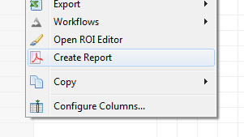
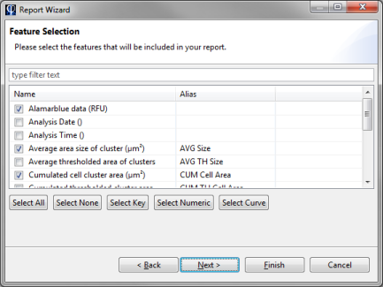
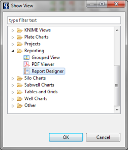
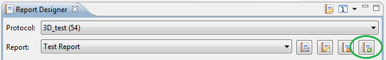
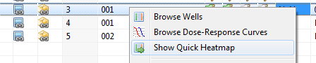
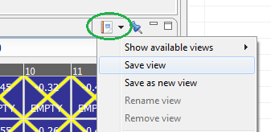
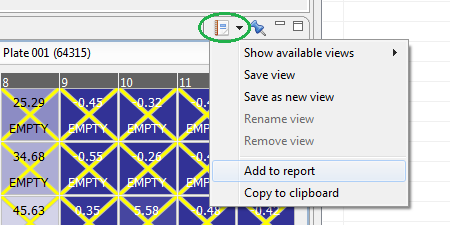
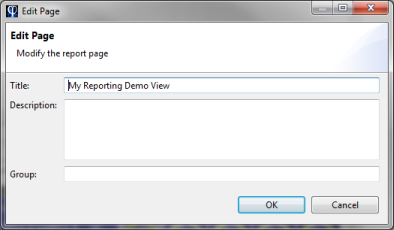
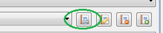
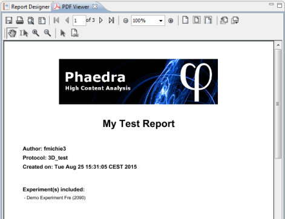

Phaedra can generate reports from your data, allowing you to obtain a high-level overview of the data in a clean and presentation-oriented format.
Reports are generated in the PDF file format, and can work in two ways:
- Template reports are generated from predefined templates which already contain layout and formatting information.
- Ad-hoc reports are generated from scratch, by adding views to a blank page and arranging the layout manually.
Template Reports
Template reports are based on a template, and can be generated by selecting an experiment and running the Report Wizard. To do this, right-click on an experiment and select Create Report.

The Report Wizard will open, asking you to select one of the available templates.

In addition, you can choose a paper format (default is A4), and a page orientation. Click Next to proceed.

In the next screen, select the features which should be included in the report.
Click Finish to create the report PDF.
Ad-hoc Reports
In contrast to template reports, ad-hoc reports do not use a predefined template. You start with a blank report and fill it up by adding Phaedra views onto the report.
To start creating an ad-hoc report, select Window > Show View > Other... in the menu bar, then select Reporting > Report Designer in the view list.

In the Report Designer view, select the protocol you would like to create a report for, then click on the New Report button.

In the dialog that appears, enter a unique name for the new report, and click Ok. Now you have a blank report, which you can start filling up with views.
To add a view, open it like you would open a view normally. For example, to open a Quick Heatmap view, right-click on a plate and select Show Quick Heatmap.

Configure the view exactly like how you want it to appear in the report. When you are ready, click on the Reporting button and select Save view.

Enter a unique name for the view and click Ok. By saving the view, you have created a 'snapshot' of the view's configuration. You can add this to the report by clicking on the Reporting button again, and selecting Add to report.

In the dialog that appears, select the report you just created, and click Ok.
The view will be added as a new page to the blank report. You will be asked to enter a title for the page, as well as an optional description which will be printed below the view in the report.

If you look at the Report Designer view again, note that the view has been added to the list of views for the new report.

You can continue adding views to the report in this fashion. Note that the report design is saved automatically every time you add, remove or modify a view. When the report design is finished, you can generate the report by clicking on the Print Report button.

The report will be generated according to your design. When it is ready, the PDF will open in a separate view.

To save the report, click on the Save button in the top left of the PDF view.